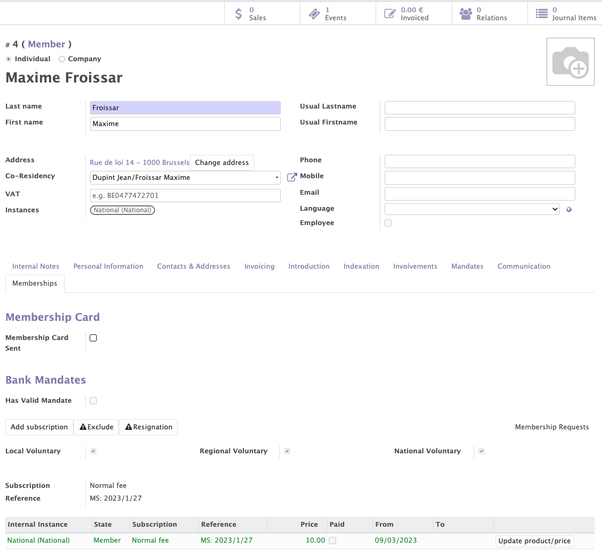
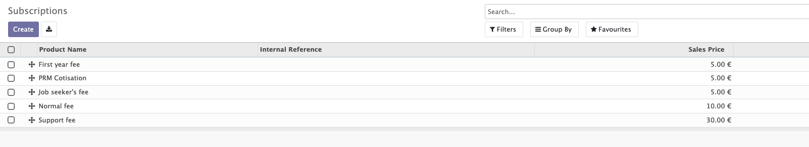
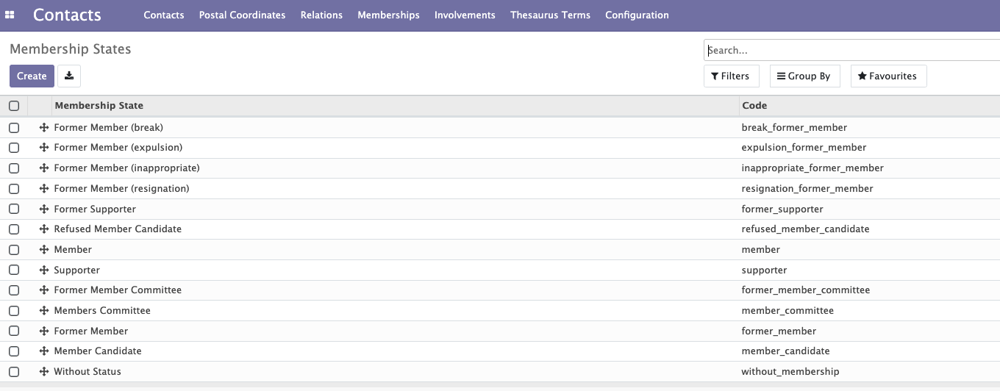
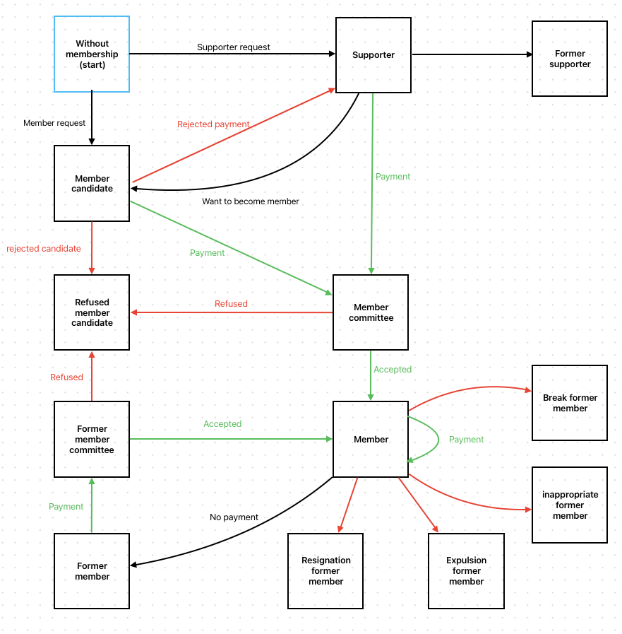
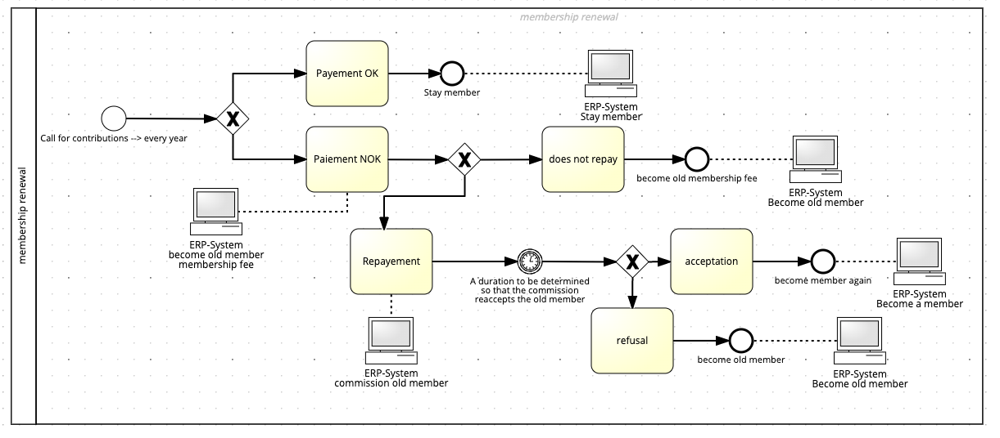

Memberships
Membership lines
In the membership tab of a contact, you can find all the membership lines of a certain member/sympathizer . This enables you to easily retrieve the complete membership history of this member/sympathizer. On those membership lines, you can find a whole list of information:
- Membership status to which the contact belongs (former member, active member...).
- Type of membership fee (normal membership, reduced price (ex: "job seeker" or "disabled")).
- Price of the subscription.
- Communication reference (it is possible to work with structured communications).
- Payment link (it is possible to pay the membership online with Stripe, Adyen or any other payment acquirer...).
- Check whether the membership has been paid or not for the current year.
- Internal instance (< internal structure of the organisation) to which the member is linked by its membership.
- Start and end date of the membership.
You can easily handle and/or modify memberships in this tab. Membership cards can also be managed from there: you can check who has already received his membership card and to which new members it still needs to be sent.
Each member in Odoo is linked to a unique member number. The member number can be found on the contact form next to the contacts name and the membership state.
The goal of membership lines
Membership lines enable you to do the follow-up of the membership status of each contact, as well as its membership dates. You can easilly do some reporting by organising your members by membership states, local groups, type of memberships (prices), dates etc...

Membership fees
Several membership types can be added in Mozaik. Each organisation can define its own membership types and link each type to a price and rule. Members will have to pay a specific price according to these rules.
Example
- It is possible to set a lower price for the first year of membership (compared to subsequent years)
- It is possible to set a different price for people with disabilities (example: 5€ instead of 10€)
- It is possible to set a different price for members above a certain age (example: members who are older than 60 years receive a 10 euro reduction)
- Etc...
The goal of memberships fees
The purpose of this feature is to allow prices and membership types to be adapted to the specificities of the organisation's contacts.

Membership Statuses
A complete membership workflow has been implemented in Mozaik. Members are linked to a membership status that evolves over time according to certain rules.
Info
This workflow can easily be adapted if it does not meet the exact needs of the organisation.

Example of workflow
- A member who resigns changes from a "member" to a "resignation former member" status.
- A member who declines to pay the membership fee will be moved to the "former member" status after a few months.

Membership renewals
Each year, the organisation may issue a call for membership renewal.
Members who paid their previous membership can receive:
- An email with a link to pay online (Sips, Adyen... or any other Odoo payment acquirer).
- An email with a form to fill in a bank mandate, in order to pay their membership fee with a direct debit transfer (SEPA)
- A letter with a structured communication (bank transfer).
Info
During the membership renewals, members who didn't pay their previous membership will automatically be transformed into 'former members'. This action can be triggered at any moment during the year.
